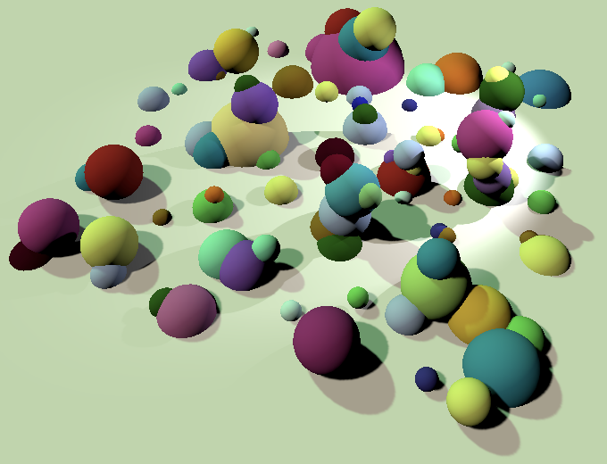
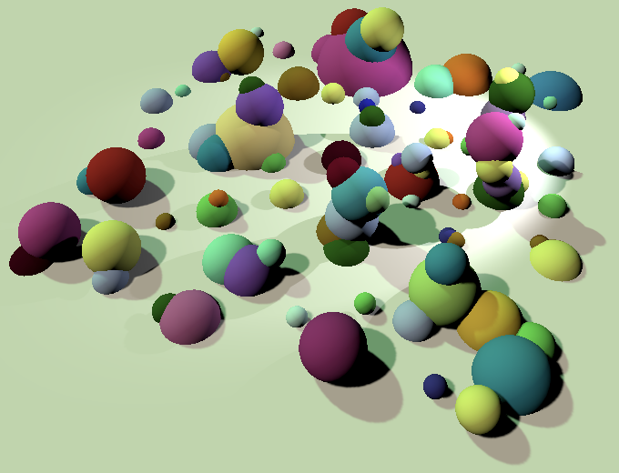

Directional Shadows
Cascaded Maps
- Support multiple shadowed directional lights.
- Control the shadow distance.
- Define a separate main light.
- Render and sample a cascaded shadow map.
- Work with culling spheres.
This is the fifth installment of a tutorial series covering Unity's scriptable render pipeline. This time we'll add support for directional shadows.
This tutorial is made with Unity 2018.3.0f2.
Shadows for Directional Lights
Conceptually, directional lights aren't that different from spotlights. They're the same, just infinitely far away. The approach we used for spotlight shadows works for them too, with a few adjustments. We'll enhance our pipeline so it supports a mix of directional lights and spotlight that can all cast shadows.
Configuring Shadows
Current, ConfigureLights only deals with shadow data in case of spotlights. But when we support directional shadows too, the same code has to be used twice. So copy the relevant code to a separate method, doing its work based on the light index and shadow light, then returning the shadow data.
Vector4 ConfigureShadows (int lightIndex, Light shadowLight) {
Vector4 shadow = Vector4.zero;
Bounds shadowBounds;
if (
shadowLight.shadows != LightShadows.None &&
cull.GetShadowCasterBounds(lightIndex, out shadowBounds)
) {
shadowTileCount += 1;
shadow.x = shadowLight.shadowStrength;
shadow.y =
shadowLight.shadows == LightShadows.Soft ? 1f : 0f;
}
return shadow;
}
Use the new method in ConfigureLights for spotlights.
if (light.lightType == LightType.Spot) {
…
//Light shadowLight = light.light;
//Bounds shadowBounds;
//if (
// shadowLight.shadows != LightShadows.None &&
// cull.GetShadowCasterBounds(i, out shadowBounds)
//) {
// …
//}
shadow = ConfigureShadows(i, light.light);
}
And also use it for directional lights.
if (light.lightType == LightType.Directional) {
Vector4 v = light.localToWorld.GetColumn(2);
v.x = -v.x;
v.y = -v.y;
v.z = -v.z;
visibleLightDirectionsOrPositions[i] = v;
shadow = ConfigureShadows(i, light.light);
}
Because there are some differences when rendering a directional shadow map, let's signal that we're dealing with a directional light here. We can do that by using the Z component of the shadow data as a flag.
shadow = ConfigureShadows(i, light.light); shadow.z = 1f;
Rendering Shadows
At this point we reserve tiles in the shadow map for directional lights, but it's not useful yet because RenderShadows is computing its matrices for a spotlight. We can only use ComputeSpotShadowMatricesAndCullingPrimitives for spotlights and have to use a different method to compute the matrices for a directional light.
First, pull the invocation of ComputeSpotShadowMatricesAndCullingPrimitives out of the check for whether we have valid shadows. That makes it easier to do it differently for directional lights.
//if (!cull.ComputeSpotShadowMatricesAndCullingPrimitives(// i, out viewMatrix, out projectionMatrix, out splitData//)) {// shadowData[i].x = 0f;// continue;//}bool validShadows; validShadows = cull.ComputeSpotShadowMatricesAndCullingPrimitives( i, out viewMatrix, out projectionMatrix, out splitData ); if (!validShadows) { shadowData[i].x = 0f; continue; }
Next, if the shadow data indicates the we have a directional light, invoke ComputeDirectionalShadowMatricesAndCullingPrimitives instead. That method has more parameters because it allows us to use shadow cascades, which we won't do here. The first argument that we supply is the light index, followed by a cascade index and the amount of cascades. We won't use cascades, to the index is zero and the count is 1. After that comes a three-component vector to define the cascade split, for which we'll use (1, 0, 0). This is followed by the tile size as an integer, then the shadow near plane value, and finally the matrices and split data output.
bool validShadows;
if (shadowData[i].z > 0f) {
validShadows =
cull.ComputeDirectionalShadowMatricesAndCullingPrimitives(
i, 0, 1, Vector3.right, (int)tileSize,
cull.visibleLights[i].light.shadowNearPlane,
out viewMatrix, out projectionMatrix, out splitData
);
}
else {
validShadows =
cull.ComputeSpotShadowMatricesAndCullingPrimitives(
i, out viewMatrix, out projectionMatrix, out splitData
);
}
if (!validShadows) {
shadowData[i].x = 0f;
continue;
}
That gives us correct matrices for directional shadows. Besides that, the split data also contains a valid culling sphere. This is a sphere that envelops all objects that need to be rendered to create a valid directional shadow map. This is useful for directional shadows because unlike spotlights they affect everything. We can use the culling sphere to reduce the amount of shapes that have to be rendered into the shadow map by assigning it to the split data of the shadow settings.
var shadowSettings = new DrawShadowsSettings(cull, i); shadowSettings.splitData.cullingSphere = splitData.cullingSphere; context.DrawShadows(ref shadowSettings);
Spotlights don't have valid culling spheres, but we can assign them anyway as there is no effect. So we don't have to distinguish between light types here.
Shadow Distance
At this point we should get valid shadow maps for directional lights, but they appear to be empty, except for maybe a little dot. That's because the map has to cover everything that the camera can see, which is up to 1000 units away by default, controlled by the camera's far plane. This region needs to be covered no matter whether geometry is actually in it, so the map gets spread very thin. Drastically reducing the camera's far plane distance will make shadows appear eventually.
How far away shadows are rendered isn't tied to the camera's far plane, that's just the default behavior. There is a different shadow distance that controls up to how far away shadows are rendered. The shadow distance is typically much smaller than the camera's far plane. This both limits the amount of shadows that have to be rendered and allows the directional shadow map to cover a smaller region.
Add a field for the shadow distance to MyPipeline, which is set via its constructor. Then assign it to the culling parameters after we've extracted them from the camera. Because it doesn't make sense to render shadow further than the camera can see, use the minimum of the shadow distance and the camera's far plane.
float shadowDistance;
public MyPipeline (
bool dynamicBatching, bool instancing,
int shadowMapSize, float shadowDistance
) {
…
this.shadowDistance = shadowDistance;
}
…
void Render (ScriptableRenderContext context, Camera camera) {
ScriptableCullingParameters cullingParameters;
if (!CullResults.GetCullingParameters(camera, out cullingParameters)) {
return;
}
cullingParameters.shadowDistance =
Mathf.Min(shadowDistance, camera.farClipPlane);
…
}
Add a configuration option for the shadow distance to MyPipelineAsset and give it a reasonable default value, like 100.
[SerializeField]
float shadowDistance = 100f;
…
protected override IRenderPipeline InternalCreatePipeline () {
return new MyPipeline(
dynamicBatching, instancing, (int)shadowMapSize, shadowDistance
);
}
Investigating Shadows
Once the shadow distance has been sufficiently reduced, directional shadows finally appear. Let's work with a very small distance for now, like 10. To get a good impression of what is covered by the map, set the light's shadow bias to zero and use a large plane for the ground. Start with a single directional light.
Because of the zero bias, we can roughly see what region is covered by the shadow map, thanks to self-shadowing on the ground. Unlike spotlight shadows, the directional shadow map moves with the camera. Also, the edge of the shadow map can still influence the scene beyond its bounds. That happens because we end up sampling beyond the edge of the map, which effectively stretches its edge to infinity. Such stretching disappears when we have more than one shadowed light, because then we use scissoring to clear the edge of each tile.

However, when there are multiple tiles we can end up sampling beyond the bounds of the directional tile and end up sampling from the wrong tile. The more tiles there are, the worse this gets.
Clamping to Shadow Tile
Directional shadow maps are troublesome because they're sampled everywhere regardless of the region they cover. The solution is to clamp shadow sampling to the tile. This is done by clamping the shadow position after converting it to the 0–1 range, before scaling and offsetting to the correct tile. Without clamping we could compute the whole transformation matrix in MyPipeline, but now we have to move the tile transformation step to the shader.
The tile scale is needed for the tile transformation, so we have to send it to the shader. Let's add a global shadow data vector for that, which we can also use to store more stuff later. Name it _GlobalShadowData and keep track of its shader identifier.
static int globalShadowDataId = Shader.PropertyToID("_GlobalShadowData");
Put the tile scale in the first component of this vector and set it in RenderShadows.
shadowBuffer.BeginSample("Render Shadows");
shadowBuffer.SetGlobalVector(
globalShadowDataId, new Vector4(tileScale, 0f)
);
context.ExecuteCommandBuffer(shadowBuffer);
shadowBuffer.Clear();
The shader also needs to know the offsets of all tiles. We can store them in the ZW components of the shadow data vectors.
float tileOffsetX = tileIndex % split; float tileOffsetY = tileIndex / split; tileViewport.x = tileOffsetX * tileSize; tileViewport.y = tileOffsetY * tileSize; shadowData[i].z = tileOffsetX * tileScale; shadowData[i].w = tileOffsetY * tileScale;
After that, remove the multiplication with the tile matrix.
worldToShadowMatrices[i] = scaleOffset * (projectionMatrix * viewMatrix);//if (split > 1) {// var tileMatrix = Matrix4x4.identity;// tileMatrix.m00 = tileMatrix.m11 = tileScale;// tileMatrix.m03 = tileOffsetX * tileScale;// tileMatrix.m13 = tileOffsetY * tileScale;// worldToShadowMatrices[i] = tileMatrix * worldToShadowMatrices[i];//}tileIndex += 1;
On the shader side, add the global shadow data vector to the shadow buffer.
CBUFFER_START(_ShadowBuffer) float4x4 _WorldToShadowMatrices[MAX_VISIBLE_LIGHTS]; float4 _ShadowData[MAX_VISIBLE_LIGHTS]; float4 _ShadowMapSize; float4 _GlobalShadowData; CBUFFER_END
In ShadowAttenuation, clamp the XY coordinates of the shadow position after the perspective division. After that, apply the tile transformation.
float4 shadowPos = mul(_WorldToShadowMatrices[index], float4(worldPos, 1.0)); shadowPos.xyz /= shadowPos.w; shadowPos.xy = saturate(shadowPos.xy); shadowPos.xy = shadowPos.xy * _GlobalShadowData.x + _ShadowData[index].zw;
Always Use Scissors
We solved the shadow soup when multiple tiles are in use, but we still get stretched shadow map edges when only a single directional shadow map is active. We solve that issue by simply always scissoring in RenderShadows.
for (int i = 0; i < cull.visibleLights.Count; i++) {
…
//if (split > 1) {
shadowBuffer.SetViewport(tileViewport);
shadowBuffer.EnableScissorRect(new Rect(
tileViewport.x + 4f, tileViewport.y + 4f,
tileSize - 8f, tileSize - 8f
));
//}
…
}
//if (split > 1) {
shadowBuffer.DisableScissorRect();
//}
Clipping Shadows Based on Distance
Although the shadow distance is based on the view distance, shadows don't disappear immediately when they go out of range. That's because the shadow maps cover stretched cubic regions of space. If part of their region falls inside the shadow distance, they are rendered entirely. Directional shadow maps move with the camera and are shaped to best fit the shadow distance, so they match fairly well. In contrast, spotlight shadow volumes are fixed to their light. If even a small part of their volume ends up in range, it gets rendered entirely. The result is that all shadows of a single spotlight appear and disappear together.
We can make the disappearance of shadows more uniform by clipping them at the configured shadow distance. To do so, we have to pass the shadow distance to the shader. We can put it in the second component of the global shadow data vector. As we'll use it to clip, we can suffice by comparing squared distances, so store the squared distance.
shadowBuffer.SetGlobalVector( globalShadowDataId, new Vector4( tileScale, shadowDistance * shadowDistance ) );
To make this also work when only a main light is in a scene, set the distance in RenderCascadedShadows as well.
shadowBuffer.BeginSample("Render Shadows");
shadowBuffer.SetGlobalVector(
globalShadowDataId, new Vector4(0f, shadowDistance * shadowDistance)
);
context.ExecuteCommandBuffer(shadowBuffer);
We also need to know the camera's position in the shader. Unity already provides this information when setting up the camera. All we have to do is add a UnityPerCamera buffer with a float3 _WorldSpaceCameraPos variable.
CBUFFER_START(UnityPerCamera) float3 _WorldSpaceCameraPos; CBUFFER_END
Create a convenient DistanceToCameraSqr function that takes a world position and returns the squared distance to the camera.
float DistanceToCameraSqr (float3 worldPos) {
float3 cameraToFragment = worldPos - _WorldSpaceCameraPos;
return dot(cameraToFragment, cameraToFragment);
}
Invoke this function in ShadowAttenuation, check whether we're beyond the shadow distance, and if so skip sampling shadows. Use it as an additional condition in the existing check so we don't get an extra branch.
if (
_ShadowData[index].x <= 0 ||
DistanceToCameraSqr(worldPos) > _GlobalShadowData.y
) {
return 1.0;
}
All shadows now get cut off at the same distance and don't just suddenly appear or disappear.
 

Cascaded Shadow Map
A limitation of shadow maps is that they are textures and thus have a texel density. You can increase the shadow map resolution if the texels end up visually too large, but that has limits. It can work fine for spotlights that cover only a small area, but directional lights have unlimited range. You can end up with a view where far away shadows appear fine, but nearby shadows are too blocky. This is known as perspective aliasing.

We need a higher resolution for nearby shadows, but those far away are fine. Ideally, we could use a different resolution based on distance. The solution to this problem is to render multiple shadow maps for the same directional light. Each map has the same size, but uses a different shadow distance. Then we'll pick the best map per fragment. That way, we get a higher resolution nearby and a lower resolution further away, which is a smarter use of texels. Each of these maps is known as a shadow cascade.
Cascade Amount
Unity has always offered three options for the amount of shadow cascades: zero, two, or four. We'll support the same options. Add a custom ShadowCascades enum configuration option to MyPipelineAsset to make this configurable, with four as the default.
public enum ShadowCascades {
Zero = 0,
Two = 2,
Four = 4
}
…
[SerializeField]
ShadowCascades shadowCascades = ShadowCascades.Four;
Also move the shadow options below the batching and instancing options, in anticipation of a later addition.

Cascade Split
Unity also allows you to specify how the cascades are distributed relative to the shadow distance. That's done by splitting the entire shadow range in either two or four parts. In the case of two cascades, a single value controls where the split happens. In the case of four cascades, three split values are stored in a vector. We'll again use the same approach as Unity, using the same default values as the Lightweight render pipeline.
[SerializeField] float twoCascadesSplit = 0.25f; [SerializeField] Vector3 fourCascadesSplit = new Vector3(0.067f, 0.2f, 0.467f);
But Unity doesn't expose these values directly. Instead, a special GUI control is shows that allows you to adjust the cascade regions. We'll use the same GUI, so hide the split fields by attaching the HideInInspector attribute to them.
[SerializeField, HideInInspector] float twoCascadesSplit = 0.25f; [SerializeField, HideInInspector] Vector3 fourCascadesSplit = new Vector3(0.067f, 0.2f, 0.467f);
We need to create a custom editor to show the cascade split GUI. We'll create a very basic one. Put its script's asset file in an Editor folder, have it keep track of the three relevant properties, and draw the default inspector. We also need to use the UnityEditor.Experimental.Rendering namespace, as it contains the code for the cascade split GUI.
using UnityEditor;
using UnityEditor.Experimental.Rendering;
using UnityEngine;
[CustomEditor(typeof(MyPipelineAsset))]
public class MyPipelineAssetEditor : Editor {
SerializedProperty shadowCascades;
SerializedProperty twoCascadesSplit;
SerializedProperty fourCascadesSplit;
void OnEnable () {
shadowCascades = serializedObject.FindProperty("shadowCascades");
twoCascadesSplit = serializedObject.FindProperty("twoCascadesSplit");
fourCascadesSplit = serializedObject.FindProperty("fourCascadesSplit");
}
public override void OnInspectorGUI () {
DrawDefaultInspector();
}
}
We can use the CoreEditorUtils.DrawCascadeSplitGUI method to draw what we need. Its design is a bit weird. It is a generic method that works either on a float or a vector. The first is for the two-split while the second is for the four-split. The relevant serialized property has to be passed as a reference parameter.
Use a switch after drawing the default inspector to determine which GUI we have to show. We can access enumValueIndex of the shadowCascades property for this. It gives us the index of the chosen enum option, which is not the actual enum value. So it's either 0, 1, or 2, instead of 0, 2, or 4. In the first case we can stop and in the other two invoke the appropriate method. After that, we have to invoke ApplyModifiedProperties on the serialized object so the user's changes get applied to our asset.
public override void OnInspectorGUI () {
DrawDefaultInspector();
switch (shadowCascades.enumValueIndex) {
case 0: return;
case 1:
CoreEditorUtils.DrawCascadeSplitGUI<float>(ref twoCascadesSplit);
break;
case 2:
CoreEditorUtils.DrawCascadeSplitGUI<Vector3>(
ref fourCascadesSplit
);
break;
}
serializedObject.ApplyModifiedProperties();
}

MyPipeline only needs to know how many cascades to use and what the split values are. We can use a single 3D vector to store the split data for both two and four cascades. Add the required fields and constructor parameters.
int shadowCascades;
Vector3 shadowCascadeSplit;
public MyPipeline (
bool dynamicBatching, bool instancing,
int shadowMapSize, float shadowDistance,
int shadowCascades, Vector3 shadowCascadeSplit
) {
…
this.shadowCascades = shadowCascades;
this.shadowCascadeSplit = shadowCascadeSplit;
}
When MyPipelineAsset invokes the pipeline's constructor it always has to provide a split vector, even when there are two cascades. In the case of two cascades, the single split value becomes the first one, while the other two remain zero.
protected override IRenderPipeline InternalCreatePipeline () {
Vector3 shadowCascadeSplit = shadowCascades == ShadowCascades.Four ?
fourCascadesSplit : new Vector3(twoCascadesSplit, 0f);
return new MyPipeline(
dynamicBatching, instancing, (int)shadowMapSize, shadowDistance,
(int)shadowCascades, shadowCascadeSplit
);
}
Cascades for Main Directional Light Only
We won't support cascaded shadow maps for all directional lights. Drawing multiple maps per light and figuring out which to sample from isn't cheap. So we'll limit ourselves to only a single directional light with cascaded shadow maps. This will be the brightest directional light with shadows in the scene. We'll refer to it as the main light. All other directional lights only get a single shadow map.
The main directional light is always the first element in the visible lights list. We can determine whether the first light meets the criterial in ConfigureLights. If it is directional, has shadows, has a positive shadow strength, and shadow cascades are enabled, then we have a main light. Keep track of this fact with a boolean field.
bool mainLightExists;
…
void ConfigureLights () {
mainLightExists = false;
shadowTileCount = 0;
for (int i = 0; i < cull.visibleLights.Count; i++) {
…
if (light.lightType == LightType.Directional) {
…
shadow = ConfigureShadows(i, light.light);
shadow.z = 1f;
if (i == 0 && shadow.x > 0f && shadowCascades > 0) {
mainLightExists = true;
}
}
…
}
…
}
We won't try to fit the shadow cascade maps in the same texture along with all other shadow maps. That would make them too small if there are multiply lights with shadows. So decrement the shadow tile count when we encounter a main light.
if (i == 0 && shadow.x > 0f && shadowCascades > 0) {
mainLightExists = true;
shadowTileCount -= 1;
}
Thus, if a main light exists we have to skip the first light in RenderShadows.
for (int i = mainLightExists ? 1 : 0; i < cull.visibleLights.Count; i++) {
…
}
We'll render the shadow cascades as tiles to a separate shadow map, which we'll name _CascadedShadowMap. Add an identifier and field for it and make sure to release it along with the other shadow map.
static int cascadedShadowMapId = Shader.PropertyToID("_CascadedShadowMap");
…
RenderTexture shadowMap, cascadedShadowMap;
…
void Render (ScriptableRenderContext context, Camera camera) {
…
if (shadowMap) {
RenderTexture.ReleaseTemporary(shadowMap);
shadowMap = null;
}
if (cascadedShadowMap) {
RenderTexture.ReleaseTemporary(cascadedShadowMap);
cascadedShadowMap = null;
}
}
Reusing Code
Rendering the cascaded shadow map is similar to the shadow rendering that we're already doing, but different enough that it requires its own method. However, a lot of the code of both methods will be the same, so let's move those bits to separate methods.
First is setting the render target for shadows. It's the same for both approaches, we only need to keep track of the render textures with different fields. So put that code in a method that returns a reference to the texture. Rather than adding yet another shadow configuration option, we'll just use the same size for both maps. If you'd like to include a separate control for the cascaded shadow map size, you can add a size parameter to this method.
RenderTexture SetShadowRenderTarget () {
RenderTexture texture = RenderTexture.GetTemporary(
shadowMapSize, shadowMapSize, 16, RenderTextureFormat.Shadowmap
);
texture.filterMode = FilterMode.Bilinear;
texture.wrapMode = TextureWrapMode.Clamp;
CoreUtils.SetRenderTarget(
shadowBuffer, texture,
RenderBufferLoadAction.DontCare, RenderBufferStoreAction.Store,
ClearFlag.Depth
);
return texture;
}
Second is configuring the shadow tile. Determining the offset, setting the viewport, and scissoring can all be put together. The tile offset can be returned as a 2D vector.
Vector2 ConfigureShadowTile (int tileIndex, int split, float tileSize) {
Vector2 tileOffset;
tileOffset.x = tileIndex % split;
tileOffset.y = tileIndex / split;
var tileViewport = new Rect(
tileOffset.x * tileSize, tileOffset.y * tileSize, tileSize, tileSize
);
shadowBuffer.SetViewport(tileViewport);
shadowBuffer.EnableScissorRect(new Rect(
tileViewport.x + 4f, tileViewport.y + 4f,
tileSize - 8f, tileSize - 8f
));
return tileOffset;
}
Third, calculating the world-to-shadow matrix can be put in its own method too. Define the view and projection matrices as reference parameters so they don't need to be copied. Likewise, make the world-to-shadow matrix an output parameter.
void CalculateWorldToShadowMatrix (
ref Matrix4x4 viewMatrix, ref Matrix4x4 projectionMatrix,
out Matrix4x4 worldToShadowMatrix
) {
if (SystemInfo.usesReversedZBuffer) {
projectionMatrix.m20 = -projectionMatrix.m20;
projectionMatrix.m21 = -projectionMatrix.m21;
projectionMatrix.m22 = -projectionMatrix.m22;
projectionMatrix.m23 = -projectionMatrix.m23;
}
var scaleOffset = Matrix4x4.identity;
scaleOffset.m00 = scaleOffset.m11 = scaleOffset.m22 = 0.5f;
scaleOffset.m03 = scaleOffset.m13 = scaleOffset.m23 = 0.5f;
worldToShadowMatrix =
scaleOffset * (projectionMatrix * viewMatrix);
}
Finally, adjust RenderShadows so it takes advantage of these new methods.
void RenderShadows (ScriptableRenderContext context) {
…
//Rect tileViewport = new Rect(0f, 0f, tileSize, tileSize);
//shadowMap = RenderTexture.GetTemporary(
// shadowMapSize, shadowMapSize, 16, RenderTextureFormat.Shadowmap
//);
//shadowMap.filterMode = FilterMode.Bilinear;
//shadowMap.wrapMode = TextureWrapMode.Clamp;
//CoreUtils.SetRenderTarget(
// …
//);
shadowMap = SetShadowRenderTarget();
shadowBuffer.BeginSample("Render Shadows");
…
for (int i = mainLightExists ? 1 : 0; i < cull.visibleLights.Count; i++) {
…
Vector2 tileOffset = ConfigureShadowTile(tileIndex, split, tileSize);
//float tileOffsetX = tileIndex % split;
//float tileOffsetY = tileIndex / split;
//tileViewport.x = tileOffsetX * tileSize;
//tileViewport.y = tileOffsetY * tileSize;
shadowData[i].z = tileOffset.x * tileScale;
shadowData[i].w = tileOffset.y * tileScale;
//shadowBuffer.SetViewport(tileViewport);
//shadowBuffer.EnableScissorRect(new Rect(
…
//));
shadowBuffer.SetViewProjectionMatrices(viewMatrix, projectionMatrix);
…
context.DrawShadows(ref shadowSettings);
//if (SystemInfo.usesReversedZBuffer) {
// …
//}
//…
//worldToShadowMatrices[i] =
// scaleOffset * (projectionMatrix * viewMatrix);
CalculateWorldToShadowMatrix(
ref viewMatrix, ref projectionMatrix, out worldToShadowMatrices[i]
);
…
}
Rendering Cascades
The world-to-shadow matrices for the cascades need to to stored in their own array, so add an identifier and field for that. As we'll have at most four cascades, the array's length is four.
static int worldToShadowCascadeMatricesId =
Shader.PropertyToID("_WorldToShadowCascadeMatrices");
…
Matrix4x4[] worldToShadowCascadeMatrices = new Matrix4x4[4];
Create a new RenderCascadedShadows, which can start as a copy of RenderShadows. It ends up simpler, because we don't have to worry about spotlights and only use the first light. We don't have to deal with shadow data per light and the cascades are always valid. We have either two or four cascades, so we always cut the map in four tiles.
When invoking ComputeDirectionalShadowMatricesAndCullingPrimitives, we now use zero as the light index and the interpolator as the cascade index. We also supply it with the actual cascade amount and split vector.
Finally, we'll once again bake the tile transformation in the world-to-shadow matrix. Making sure that we stay inside the tile bounds is part of picking the correct cascade in the shader.
void RenderCascadedShadows (ScriptableRenderContext context) {
float tileSize = shadowMapSize / 2;
cascadedShadowMap = SetShadowRenderTarget();
shadowBuffer.BeginSample("Render Shadows");
context.ExecuteCommandBuffer(shadowBuffer);
shadowBuffer.Clear();
Light shadowLight = cull.visibleLights[0].light;
shadowBuffer.SetGlobalFloat(
shadowBiasId, shadowLight.shadowBias
);
var shadowSettings = new DrawShadowsSettings(cull, 0);
var tileMatrix = Matrix4x4.identity;
tileMatrix.m00 = tileMatrix.m11 = 0.5f;
for (int i = 0; i < shadowCascades; i++) {
Matrix4x4 viewMatrix, projectionMatrix;
ShadowSplitData splitData;
cull.ComputeDirectionalShadowMatricesAndCullingPrimitives(
0, i, shadowCascades, shadowCascadeSplit, (int)tileSize,
shadowLight.shadowNearPlane,
out viewMatrix, out projectionMatrix, out splitData
);
Vector2 tileOffset = ConfigureShadowTile(i, 2, tileSize);
shadowBuffer.SetViewProjectionMatrices(viewMatrix, projectionMatrix);
context.ExecuteCommandBuffer(shadowBuffer);
shadowBuffer.Clear();
shadowSettings.splitData.cullingSphere = splitData.cullingSphere;
context.DrawShadows(ref shadowSettings);
CalculateWorldToShadowMatrix(
ref viewMatrix, ref projectionMatrix
out worldToShadowCascadeMatrices[i]
);
tileMatrix.m03 = tileOffset.x * 0.5f;
tileMatrix.m13 = tileOffset.y * 0.5f;
worldToShadowCascadeMatrices[i] =
tileMatrix * worldToShadowCascadeMatrices[i];
}
shadowBuffer.DisableScissorRect();
shadowBuffer.SetGlobalTexture(cascadedShadowMapId, cascadedShadowMap);
shadowBuffer.SetGlobalMatrixArray(
worldToShadowCascadeMatricesId, worldToShadowCascadeMatrices
);
shadowBuffer.EndSample("Render Shadows");
context.ExecuteCommandBuffer(shadowBuffer);
shadowBuffer.Clear();
}
Invoke this method after ConfigureLights, if there is a main light.
if (cull.visibleLights.Count > 0) {
ConfigureLights();
if (mainLightExists) {
RenderCascadedShadows(context);
}
if (shadowTileCount > 0) {
RenderShadows(context);
}
else {
cameraBuffer.DisableShaderKeyword(shadowsHardKeyword);
cameraBuffer.DisableShaderKeyword(shadowsSoftKeyword);
}
}
We can now end up using either one, two, or zero render textures. If there's only a main light, then we only render to the cascaded shadow map. If there are additional lights with shadows, then we render to the regular shadow map too. Or we have shadows but no main light, in which case we only render to the regular shadow map. The frame debugger will merge the two Render Shadows sections into a single one.
If you inspect the cascaded shadow map via the frame debugger you'll see that it contains four tiles. What's visible in the tiles depends on the shadow distance and the cascade split. In case of the default four cascade split, a large shadow distance is required for anything to appear in the first cascade.

Sampling the Cascaded Shadow Map
To make use of the cascaded shadow map in the shader, we need a few things. First, we have to know that the map is in use, which we can control via shader keywords. Let's use two, to differentiate between hard and soft cascaded shadows, avoiding a branch in the shader.
const string cascadedShadowsHardKeyword = "_CASCADED_SHADOWS_HARD"; const string cascadedShadowsSoftKeyword = "_CASCADED_SHADOWS_SOFT";
Next, we also need to know the map's size and shadow strength. While we could use _ShadowMapSize, let's use a separate _CascadedShadowMapSize vector so the shader supports separate sizes.
static int cascadedShadowMapSizeId =
Shader.PropertyToID("_CascadedShadowMapSize");
static int cascadedShadoStrengthId =
Shader.PropertyToID("_CascadedShadowStrength");
Set these values and keywords at the end of RenderCascadedShadows.
shadowBuffer.SetGlobalMatrixArray(
worldToShadowCascadeMatricesId, worldToShadowCascadeMatrices
);
float invShadowMapSize = 1f / shadowMapSize;
shadowBuffer.SetGlobalVector(
cascadedShadowMapSizeId, new Vector4(
invShadowMapSize, invShadowMapSize, shadowMapSize, shadowMapSize
)
);
shadowBuffer.SetGlobalFloat(
cascadedShadoStrengthId, shadowLight.shadowStrength
);
bool hard = shadowLight.shadows == LightShadows.Hard;
CoreUtils.SetKeyword(shadowBuffer, cascadedShadowsHardKeyword, hard);
CoreUtils.SetKeyword(shadowBuffer, cascadedShadowsSoftKeyword, !hard);
shadowBuffer.EndSample("Render Shadows");
Also disable the cascaded shadow keywords when RenderCascadedShadow is not invoked.
if (cull.visibleLights.Count > 0) {
ConfigureLights();
if (mainLightExists) {
RenderCascadedShadows(context);
}
else {
cameraBuffer.DisableShaderKeyword(cascadedShadowsHardKeyword);
cameraBuffer.DisableShaderKeyword(cascadedShadowsSoftKeyword);
}
if (shadowTileCount > 0) {
RenderShadows(context);
}
else {
cameraBuffer.DisableShaderKeyword(shadowsHardKeyword);
cameraBuffer.DisableShaderKeyword(shadowsSoftKeyword);
}
}
else {
cameraBuffer.SetGlobalVector(
lightIndicesOffsetAndCountID, Vector4.zero
);
cameraBuffer.DisableShaderKeyword(cascadedShadowsHardKeyword);
cameraBuffer.DisableShaderKeyword(cascadedShadowsSoftKeyword);
cameraBuffer.DisableShaderKeyword(shadowsHardKeyword);
cameraBuffer.DisableShaderKeyword(shadowsSoftKeyword);
}
Add a single multi-compile directive to the Lit shader for the cascaded shadow keywords. There are three options: either no, hard, or soft cascaded shadows are in use.
#pragma multi_compile _ _CASCADED_SHADOWS_HARD _CASCADED_SHADOWS_SOFT #pragma multi_compile _ _SHADOWS_HARD #pragma multi_compile _ _SHADOWS_SOFT
After that, add the required variables to the shadow buffer and define the cascaded shadow map texture and sampler.
CBUFFER_START(_ShadowBuffer) float4x4 _WorldToShadowMatrices[MAX_VISIBLE_LIGHTS]; float4x4 _WorldToShadowCascadeMatrices[4]; float4 _ShadowData[MAX_VISIBLE_LIGHTS]; float4 _ShadowMapSize; float4 _CascadedShadowMapSize; float4 _GlobalShadowData; float _CascadedShadowStrength; CBUFFER_END TEXTURE2D_SHADOW(_ShadowMap); SAMPLER_CMP(sampler_ShadowMap); TEXTURE2D_SHADOW(_CascadedShadowMap); SAMPLER_CMP(sampler_CascadedShadowMap);
Let's make HardShadowAttenuation work with both maps by adding a boolean parameter to indicate whether we want to sample cascades, with false being the default. Use that to decide which texture and sampler to use. We'll hard-code the cascade argument, so it won't result in shader branches.
float HardShadowAttenuation (float4 shadowPos, bool cascade = false) {
if (cascade) {
return SAMPLE_TEXTURE2D_SHADOW(
_CascadedShadowMap, sampler_CascadedShadowMap, shadowPos.xyz
);
}
else {
return SAMPLE_TEXTURE2D_SHADOW(
_ShadowMap, sampler_ShadowMap, shadowPos.xyz
);
}
}
Give SoftShadowAttenuation the same treatment. In this case it's about selecting the correct shadow map size. We can invoke HardShadowAttenuation here so we don't have to write the same code again.
float SoftShadowAttenuation (float4 shadowPos, bool cascade = false) {
real tentWeights[9];
real2 tentUVs[9];
float4 size = cascade ? _CascadedShadowMapSize : _ShadowMapSize;
SampleShadow_ComputeSamples_Tent_5x5(
size, shadowPos.xy, tentWeights, tentUVs
);
float attenuation = 0;
for (int i = 0; i < 9; i++) {
//attenuation += tentWeights[i] * SAMPLE_TEXTURE2D_SHADOW(
// _ShadowMap, sampler_ShadowMap, float3(tentUVs[i].xy, shadowPos.z)
//);
attenuation += tentWeights[i] * HardShadowAttenuation(
float4(tentUVs[i].xy, shadowPos.z, 0), cascade
);
}
return attenuation;
}
Now add a CascadedShadowAttenuation function, which is a simpler version of ShadowAttenuation. If there are no cascades, the attenuation is always 1. Otherwise, compute the shadow position and retrieve either the hard or soft shadow attenuation and apply the shadow strength. We won't clip shadows based on distance at this point.
Start by always using the third shadow cascade map, so use 2 to index the _WorldToShadowCascadeMatrices array. That way it's most likely that we'll see at least some shadows in a reasonably large area, assuming you're using four cascades. The fourth cascade covers the largest area, but might be so low-resolution that nearby shadows are hard to see.
float CascadedShadowAttenuation (float3 worldPos) {
#if !defined(_CASCADED_SHADOWS_HARD) && !defined(_CASCADED_SHADOWS_SOFT)
return 1.0;
#endif
float cascadeIndex = 2;
float4 shadowPos = mul(
_WorldToShadowCascadeMatrices[cascadeIndex], float4(worldPos, 1.0)
);
float attenuation;
#if defined(_CASCADED_SHADOWS_HARD)
attenuation = HardShadowAttenuation(shadowPos, true);
#else
attenuation = SoftShadowAttenuation(shadowPos, true);
#endif
return lerp(1, attenuation, _CascadedShadowStrength);
}
Next, add a separate MainLight function to take care of the main light. It does the same as DiffuseLight, but limited to only the directional light at index zero, relying on CascadedShadowAttenuation for its shadows.
float3 MainLight (float3 normal, float3 worldPos) {
float shadowAttenuation = CascadedShadowAttenuation(worldPos);
float3 lightColor = _VisibleLightColors[0].rgb;
float3 lightDirection = _VisibleLightDirectionsOrPositions[0].xyz;
float diffuse = saturate(dot(normal, lightDirection));
diffuse *= shadowAttenuation;
return diffuse * lightColor;
}
Add the main light to the diffuse light in LitPassFragment if there are cascaded shadows.
float3 diffuseLight = input.vertexLighting;
#if defined(_CASCADED_SHADOWS_HARD) || defined(_CASCADED_SHADOWS_SOFT)
diffuseLight += MainLight(input.normal, input.worldPos);
#endif
for (int i = 0; i < min(unity_LightIndicesOffsetAndCount.y, 4); i++) {
…
}
The cascaded shadows for the main light now show up, but the same light gets added a second time in the light loop, which is incorrect. We cannot simply skip the first index of the light loop, because the main light isn't guaranteed to be the most important light for every object. We either have to add another shader branch in the loop, or eliminate the main light from the visible light list before rendering. We can do that in ConfigureLight along with limiting the amount of lights. As a side effect, this also increases the maximum pixel lights per object to five when a main light is active.
if (mainLightExists || cull.visibleLights.Count > maxVisibleLights) {
int[] lightIndices = cull.GetLightIndexMap();
if (mainLightExists) {
lightIndices[0] = -1;
}
for (int i = maxVisibleLights; i < cull.visibleLights.Count; i++) {
lightIndices[i] = -1;
}
cull.SetLightIndexMap(lightIndices);
}

Eliminating the main light from the list means that we adjust the visible lights each frame that we use cascaded shadows. Currently, that also means that temporary memory is allocated every such frame. We have to live with this until we get a variant GetLightIndexMap method that doesn't allocate a new array each invocation.
Selecting the Correct Cascade
At this point we have a functional main light with a cascaded shadow map, but we always use the same cascade. The third cascade is suitable for shadows that are fairly far away, but is bad for nearby shadows. In contrast, the second cascade is a lot better nearby, but doesn't cover as large a region.

Unity uses the cascade split to partition the shadow space into cascades. It uses culling spheres to define each cascade's region. Each successive sphere has a larger radius. Their positions vary too, because they're placed as optimally as possible to cover as little of the scene as required. To determine which cascade to use, we have to figure out inside which culling sphere each fragment lies.
We have to send the culling spheres to the shader. It's most convenient to do that via an array. Add an identifier and field for this purpose to MyPipeline. Each sphere is described by a 4D vector. The XYZ components define its position while the W component defines its radius.
static int cascadeCullingSpheresId =
Shader.PropertyToID("_CascadeCullingSpheres");
…
Vector4[] cascadeCullingSpheres = new Vector4[4];
We already retrieve the culling sphere of each cascade inside RenderCascadedShadows. We can simply copy them to the array and later send it to the shader. And because we only need to check whether the fragment lies inside the sphere we can make do with a squared distance comparison, so square the stored radii.
for (int i = 0; i < shadowCascades; i++) {
…
cascadeCullingSpheres[i] =
shadowSettings.splitData.cullingSphere = splitData.cullingSphere;
cascadeCullingSpheres[i].w *= splitData.cullingSphere.w;
context.DrawShadows(ref shadowSettings);
…
}
shadowBuffer.DisableScissorRect();
shadowBuffer.SetGlobalTexture(cascadedShadowMapId, cascadedShadowMap);
shadowBuffer.SetGlobalVectorArray(
cascadeCullingSpheresId, cascadeCullingSpheres
);
On the shader side, add the culling sphere array to the shadow buffer.
float4x4 _WorldToShadowCascadeMatrices[4]; float4 _CascadeCullingSpheres[4];
Let's add a convenient method to check whether a world position falls inside a given culling sphere, using its index as a parameter. We'll do some math with the result later, so return it as a float.
float InsideCascadeCullingSphere (int index, float3 worldPos) {
float4 s = _CascadeCullingSpheres[index];
return dot(worldPos - s.xyz, worldPos - s.xyz) < s.w;
}
Invoke that function in CascadedShadowAttenuation for all four culling spheres. For each sphere, the result is 1 when the sphere encompasses the point and zero otherwise. These values serve as flags to indicate which spheres are valid. Put them in an ordered float4 variable before determining the cascade index.
float4 cascadeFlags = float4( InsideCascadeCullingSphere(0, worldPos), InsideCascadeCullingSphere(1, worldPos), InsideCascadeCullingSphere(2, worldPos), InsideCascadeCullingSphere(3, worldPos) ); float cascadeIndex = 2;
If a point lies within a sphere, then it also lies inside all larger spheres. So we can end up with five different flag configurations: (1,1,1,1), (0,1,1,1), (0,0,1,1), (0,0,0,1), or (0,0,0,0). We can use this to visualize the cascades, by summing the flags and dividing by four. That can be done by taking the dot product of the flags and (¼,¼,¼,¼).
return dot(cascadeFlags, 0.25); float cascadeIndex = 2;

We want to use the first cascade that is valid, so we have to clear all the flags after the first one that's set. The first flag is always good, but the second should be cleared if the first one is set. And the third should be cleared when the second is set; likewise for the fourth. We can do that by subtracting the XYZ components from YZW and saturating the result. If we take the dot product of that result with (0,1,2,3), then we end up with the final cascade index. The conversion goes like this:
(1,1,1,1) (1,0,0,0) 0
(0,1,1,1) (0,1,0,0) 1
(0,0,1,1) (0,0,1,0) 2
(0,0,0,1) (0,0,0,1) 3
(0,0,0,0) (0,0,0,0) 0
//return dot(cascadeFlags, 0.25);cascadeFlags.yzw = saturate(cascadeFlags.yzw - cascadeFlags.xyz); float cascadeIndex = dot(cascadeFlags, float4(0, 1, 2, 3));
That works correctly when at least one culling sphere encompasses the point. But when a point lies outside all spheres we end up with zero, incorrectly sampling from the first cascade. A trick Unity uses here is to provide an extra world-to-shadow matrix for a fifth nonexistent cascade. It's a zero matrix, which sets the shadow position to the near plane and thus never results in a shadow. We can do that by simply adding a fifth element to the worldToShadowCascadeMatrices array in MyPipeline.
Matrix4x4[] worldToShadowCascadeMatrices = new Matrix4x4[5];
However, when a reverse Z buffer is used we have to push the shadow position Z coordinate to 1 instead. We can do that by setting the m33 field of the dummy matrix to 1 in the constructor.
public MyPipeline (
…
) {
GraphicsSettings.lightsUseLinearIntensity = true;
if (SystemInfo.usesReversedZBuffer) {
worldToShadowCascadeMatrices[4].m33 = 1f;
}
…
}
Increase the size of the matrix array in the shader to match. Like before, this will require a restart of Unity if you've already compiled the shader when its length was four.
float4x4 _WorldToShadowCascadeMatrices[5];
Now we have to include the (0,0,0,0) 4 conversion, which we can do by starting with 4 and subtracting the dot product of the isolated flag with (4,3,2,1).
float cascadeIndex = 4 - dot(cascadeFlags, float4(4, 3, 2, 1));

Because the culling spheres don't line up with the camera and the shadow distance, the cascaded shadows aren't cut off at the exact same distance as the other shadows. Sometimes nearer, sometimes further away, and they can still pop in and out of existence. We can synchronize them by checking the shadow distance in CascadedShadowAttenuation too.
#if !defined(_CASCADED_SHADOWS_HARD) && !defined(_CASCADED_SHADOWS_SOFT)
return 1.0;
#endif
if (DistanceToCameraSqr(worldPos) > _GlobalShadowData.y) {
return 1.0;
}
The next tutorial is Transparency.